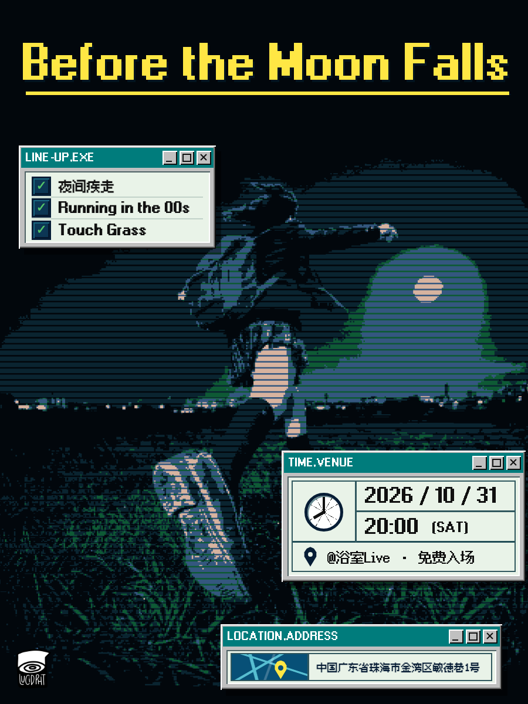

FILE 01 / HOST BAND
Touch Grass
把卧室里的噪音、迟到的情绪和吉他反馈带到现场。今晚不解决问题，只把它放大。
- MOOD
- indie rock / emo
- STATUS
- LIVE · 20:00
INDIE / EMO LIVE ARCHIVE
把卧室里的噪音、迟到的情绪和吉他反馈带到现场。今晚不解决问题，只把它放大。
20:00 START
珠海浴室
Bathroom Live
FREE ENTRY

@ 珠海浴室 Bathroom Live
免票入场，欢迎来看。请关注公众号菜单获取最新演出信息。